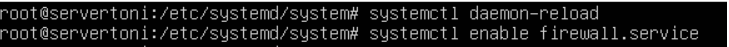

Un firewall o cortafuegos es un software o hardware que está diseñado para bloquear el acceso no autorizado. Su función principal es la de examinar y controlar el tráfico de red que entra y sale de una red protegida, permitiendo o denegando el acceso según las reglas de seguridad configuradas.
A continuación os explicaremos cómo hemos desarrollado este reto, en el cual, hemos utilizado la misma máquina virtual de Ubuntu Server. En este reto nos pedía hacer la instalación y configuración de un Firewall. En el cual tendremos que limitar los siguientes accesos, primero permitirá la navegación web y web segura de la red de la escuela, esto implica activar el NAT para que funcione, permitirá la conexión remotas a anydesk y terminal server para acceder remotamente al ordenador de casa de los profes, conexiones a servidores DNS externos, permitirá conexiones ftp a internet y al propio firewall, haga log de todas las conexiones y por último el resto de accesos estará denegado.
1. Instalación de un firewall.
1. Para empezar con la creación del firewall instalamos los iptables con el comando “apt install iptables” una vez instalado los iptables crearemos un script con las reglas del firewall en /etc/init.d , en mi caso llamare el archivo “fdenegar.sh”
Una vez hemos creado el script tendremos que poner el script como predeterminado para que cuando se apague la máquina virtual no tengamos que volver a crear el script ya que se borraría.
2. Configuración de un firewall.
1. Para comenzar tendremos que ir al directorio /etc/systemd/system y crearemos un archivo que se llamara firewall.service en ExecStart se pondrá lo mismo que pone en la imagen excepto donde pone fdenegar.sh que se pondra el nombre del script que tu le hayas otorgado.
2. Le daremos permisos con el comando chmod a fdenegar.sh y a firewall.service y comprobaremos los permisos que le hemos dado con ls -l.

3. Para realizar los cambios pondremos systemctl daemon-reload y systemctl enable firewall.sh.

4. Y para verificar que se han cargado las reglas pondremos iptables -L -v -n.
Como hemos activado los logs de iptables, deberemos buscar algún programa que nos permita monitorizar estos logs.